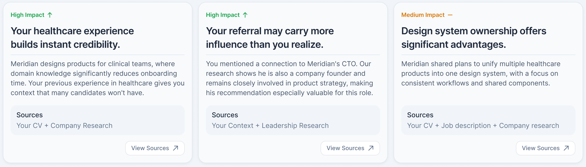

GateWay - Preparing for the Right Opportunity
- Project
- Personal Project
- Role
- Product Designer & Builder
- Platform
- Web
GateWay is an AI-powered career product that helps candidates decide which opportunities deserve their time, understand how their experience maps to a role, prepare an evidence-based case, and practice through realistic interviews. I designed and built the product end to end, including its working backend and orchestrated intelligence.
The Origin
From interview simulator to preparation system
The idea started while I was searching for my first product design role. Reading the job description was only the start — the real challenge was understanding what the company needed, where my experience fit, which gaps mattered, and what evidence would make the strongest case in an interview.
My first version was an interview simulator. While building the intelligence behind it, I realized useful preparation had to begin before the interview itself — turning the simulator into one stage of a larger, connected system:
Understand the opportunity Assess fit Identify gaps Build your case Practice Learn from your answers
The System
One system, every stage
This intelligence was tested and built before any interface existed. I ran structured experiments to prove it could parse a CV, research a company, and cross-reference the two reliably.
I then hardened the pipeline against real CVs and postings. The screens that follow were designed around what it proved it could do.
The same intelligence turns a candidate's inputs into a structured understanding of the opportunity, builds the preparation from it, and uses their interview answers to produce a debrief of strengths, gaps, and actions that connect back to the preparation journey.
Candidate inputs
Define research scope
GateWay backend · OpenAI API
Research the role and company
OpenAI API · Web Search
Filter and synthesize findings
OpenAI API · GPT-4o
Generate the preparation experience
Candidate answers
Analyze interview responses
OpenAI API · no web search
Personalized debrief
Strengths · Gaps · Actionable feedback
Stage 1: Analyze
A decision, not a report
The first thing GateWay returns is a position, not information: pursue this role, or don't. Every claim beneath the verdict shows where it came from, so the reasoning can be inspected - and argued with.
- A clear verdict on a confidence spectrum, not a score
- Requirements matched one by one to the candidate's evidence
- Company signals pulled from live public sources

The Principle
Designing trust, not output
The hard problem wasn't generating insight - a system like this can produce endless plausible advice. It was giving a candidate a reason to believe it. So every recommendation is traceable back to evidence: when GateWay calls a healthcare background a hidden advantage, it names its sources and lets the candidate open them. Insight that couldn't show its origin didn't ship.

Stage 2: Prepare
Preparation as positioning
Most candidates prepare by rereading the job post and hoping. GateWay's plan starts from the gaps the analysis found and treats each one as a positioning problem: name it before the interviewer does, then bridge it with material the candidate already owns. It ends with a one-line story - the single impression to leave, so every answer in the room points the same direction.

Stage 3: Interview
Just like the real room
A voice-first simulation designed to recreate the pressure of a real interview. Candidates listen before answering, respond with a live transcript, and receive feedback only after the session ends.

The question - listen first

The answer - mic live
Stage 4: Debrief
Feedback that closes the loop
The debrief answers the question candidates actually ask afterwards: would I have advanced? The verdict arrives in the interviewer's voice, on a spectrum from definite no to strong hire - and like everything else, it shows its work. Every dimension is backed by what was measured, every grade quotes the candidate's own answers, and each ends with one thing to do differently. The final action isn't a score to share - it's a plan to revisit. The loop is the product.

Current Status
A working product, built end to end
GateWay is a working product, not a UI exploration. The backend is implemented, the orchestration runs end to end, and the prototype is functional - designed and built by me, using Claude Code as the development environment. The screens above are the product's real surfaces, showing what its intelligence produces. A public version is planned; the next step is exposing the live product alongside this case study.